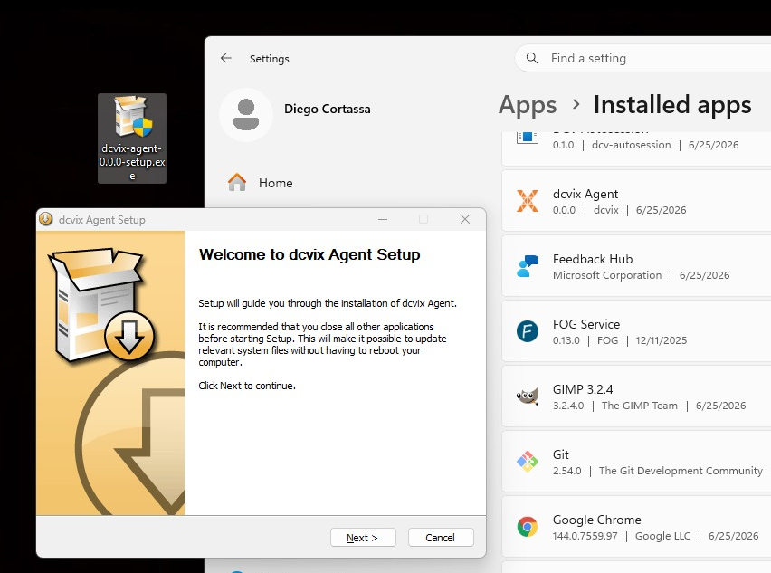

Agent
The agent runs on each DCV workstation. It manages local Amazon DCV sessions, reports system statistics to the director, and handles certificate lifecycle (auto-registration and renewal).

Responsibility
- Register with the director automatically on first startup (Ed25519 key pair + GUID + CSR)
- Renew its TLS certificate before expiry (every ~12 hours by default)
- Create, list, and close local DCV sessions via the
dcvCLI - Report system stats (memory, CPU, load) and active sessions to the director periodically
- Clean up stale idle sessions (configurable reaper interval)
- Serve a REST API for the director to request session operations
Lifecycle
flowchart TD
A[Start] --> B{agent.crt valid?}
B -- No --> C[Generate Ed25519 key pair]
C --> D[Load or generate GUID]
D --> E[Register loop: POST /v1/agent/register]
E -- 403 pending --> E
E -- 200 OK --> F[Store signed cert + CA]
B -- Yes --> G[Start mTLS server]
F --> G
G --> H[Start renewal loop]
G --> I[Start stats updater]
G --> J[Start session reaper]Phases
- Key generation -
certificate.Manager.EnsureKeyPair()generates Ed25519 key on first run, stores at{dataDir}/agent.key(0600) - GUID generation -
EnsureGUID()creates UUIDv4, persists to{dataDir}/agent.guid - Registration -
registrator.Registrator.Register()loops every 30s: generates CSR with CNdcvix-agent-{guid}, POSTs TOFU HTTPS to director, waits for admin approval - Active service - starts mTLS server once
agent.crtandca.pemexist, begins renewal + stats + reaper loops - Renewal -
renewer.RenewerchecksCertificateNeedsRenewal()(24h window), POSTs fresh CSR via mTLS to/v1/agent/renew
Inputs / Outputs
| Direction | Method | Content |
|---|---|---|
| Director in | POST /v1/sessions |
Create session (UserID, SessionType, SessionID) |
| Director in | DELETE /v1/sessions/{id} |
Close session |
| Director in | POST /v1/config |
Set DCV config parameters |
| Out to director | POST /v1/agent/register |
CSR + GUID + hostname (plain HTTPS, TOFU) |
| Out to director | POST /v1/agent/renew |
CSR (mTLS) |
| Out to director | POST /v1/agent/update |
Sessions list + stats + tags (mTLS, every update_interval) |
| Out | dcv CLI |
Create/list/close sessions via the system DCV binary |
All endpoints except /v1/health require mTLS authentication by the director (validated via director-issued CA).
API Endpoints
| Method | Endpoint | Description |
|---|---|---|
| GET | /v1/health |
Health status of the agent |
| GET | /v1/sessions |
List all active DCV sessions |
| POST | /v1/sessions |
Create a new DCV session |
| DELETE | /v1/sessions/{id} |
Close a DCV session |
| POST | /v1/config |
Set DCV configuration parameters |
| GET | /v1/stats |
Return session list and system stats for the director |
POST /v1/sessions
Request body:
{
"userId": "USERNAME",
"sessionType": "console",
"sessionId": "SESSIONNAME"
}
POST /v1/config
Request body:
{
"config": [
{
"section": "display",
"key": "quality",
"value": "(30,80)"
}
]
}
curl Examples
All agent API calls (except /v1/health) require mTLS authentication with director-issued certificates, verified against the director's CA.
Health
curl --cert dcvix-director.crt --key dcvix-director.key --cacert ca-cert.pem \
https://127.0.0.1:8446/v1/health
List Sessions
curl --cert dcvix-director.crt --key dcvix-director.key --cacert ca-cert.pem \
https://127.0.0.1:8446/v1/sessions
Create a New Session
curl --cert dcvix-director.crt --key dcvix-director.key --cacert ca-cert.pem \
-X POST \
-H "Content-Type: application/json" \
-d '{"userId": "john", "sessionType": "console", "sessionId": "test"}' \
https://127.0.0.1:8446/v1/sessions
Close a Session
curl --cert dcvix-director.crt --key dcvix-director.key --cacert ca-cert.pem \
-X DELETE \
https://127.0.0.1:8446/v1/sessions/test
Set Compression Quality
curl --cert dcvix-director.crt --key dcvix-director.key --cacert ca-cert.pem \
-X POST \
-H "Content-Type: application/json" \
-d '{"config": [{"section": "display", "key": "quality", "value": "(30,80)"}]}' \
https://127.0.0.1:8446/v1/config
Internal Packages
| Package | Role |
|---|---|
certificate/ |
Ed25519 key pair, GUID, CSR generation, cert/CA storage, CertificateNeedsRenewal() |
registrator/ |
Retry loop (30s), TOFU or pre-deployed CA, stores signed cert on success |
renewer/ |
Periodic renewal (configurable, default 12h), retry every 5min on failure |
dcv/ |
Wraps dcv binary: create-session, list-sessions, close-session, set-config |
stats/ |
System statistics collection (memory, CPU, load) |
updater/ |
Periodic POST of sessions + stats to director |
reaper/ |
Cleanup of stale idle sessions (configurable interval, default 60s) |
server/ |
REST API + mTLS with GetCertificate callback for hot-reload |
client/ |
HTTP clients - NewRegistrationClient() (TOFU) and NewMTLSClient() (strict) |
Failure Modes
| Scenario | Behavior |
|---|---|
| Director unreachable | Registration or renewal retries. Cert valid for 14 days - tolerant of extended outages. |
| Cert expired | Falls back to fresh registration (same GUID, same key - re-approval needed). |
agent.key lost |
Generates new key + new GUID on next start. Registers as a completely new agent. |
agent.crt lost (key + GUID intact) |
Re-registers with same GUID. Director sees pending for an already-registered GUID, admin approves. |
dcv binary missing or fails |
Returns error to director on session operations; stats reporting continues unaffected. |
data_dir permissions wrong |
Startup fails if data_dir cannot be created or written to. |
Related
- Agent configuration - all config fields and defaults
- Architecture: communication - protocol details
- Architecture: security - trust model and TOFU